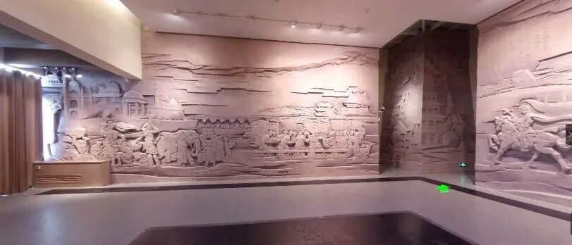
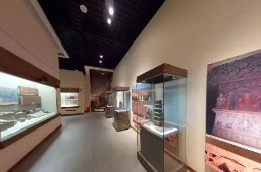
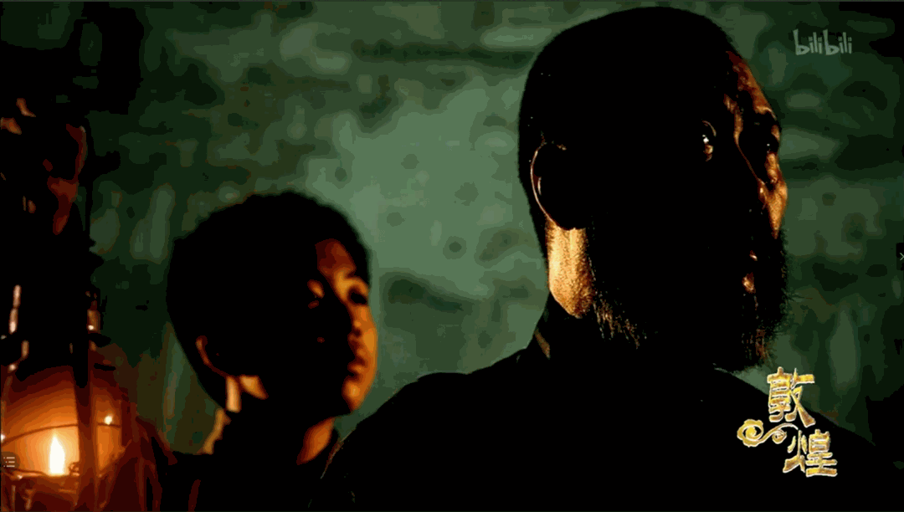
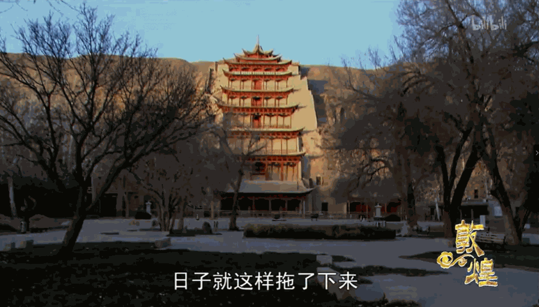

【行者无疆 聆谂丝韵】缘在敦煌
万里敦煌道
三春雪未晴
送君走马去
遥似踏花行
上午，行者们线上参观了修建于1979年的敦煌博物馆，这坐拥在万里戎机、关山若飞的敦煌之中的博物馆分为五个展厅：两汉、魏晋南北、隋唐五代、西夏、清朝。

两汉为敦煌历史的新纪元。虽不能亲眼所见大量出土文物, 但图板仍展示着两汉时期丝绸之路的繁盛。魏晋南北朝时期的器物颇具特色,精美别致与研究价值溶于一身的镇墓罐,多姿多彩的鸡首灶,古代边关将士使用的铜弩机,反映古代现实生活状况的陶仓,华丽的丝绸都把人们带入风情万种的十六国时期。
隋唐五代，敦煌成为中西交通枢纽的重要地位。料珠、围棋、玉器、陶器、牵驼俑等珍贵文物充分说明敦煌唐代作为商阜重镇、国际市场、胡商云集的历史史实。宋代以后，随着丝绸之路的衰败,汉唐以来敦煌兴盛的经济文化开始走向衰落。元、明时，蒙元政府的经营和管理，使敦煌这个通西域的门户再次畅通，吐蕃对敦煌的统治、张议潮归义军政权、西汉金山国、瓜沙曹氏政权等重大历史事件都为敦煌中古历史添上了浓墨重彩的一笔。

数字全景敦煌博物馆，运用图片版画与语言讲解，向队友们展示着敦煌的来龙去脉,真实反映敦煌的社会生活面貌：金戈铁马的沙场战事与普罗大众的快意人生。
下午，“旅途”以一场敦煌电影展开。这是一批无名的大师，纵贯几个朝代，风餐露宿胡饼充饥，留下昏暗洞窟中的绚烂无声。避过战火的浩劫与时间的冷遇，莫高窟以横贯古今的姿态，庇佑这些壁画至今。

不知多少无名的民间大师来到敦煌大泉河边，经年累月经受着生活上的寂寞清苦，将经卷中的禅意生动再现于泥壁之上。古代人对现实生活、佛教信仰的理解及天国佛景美好想象的描绘，南朝陆探微、盛唐吴道子、笔才一二象已生的疏体画以及很多当时朝代所盛行的主流画风，在万千瑰宝因战乱、天灾、人祸而损毁消失时，却以这种姿态奇迹般得以幸存。

这些未曾载入任何史册资料的创造者们，将一生的心血倾注在炫彩的壁画上，而谁又能把这些才华横溢的民间大师们请到艺术史的台前来。
世界上最黑暗和最光明的地方，都在人的心里；而一灯如豆的洞窟中，正如博物馆所展示的一般，正如这些民间大师们，无声无息地，将黑暗中的心幻化成绚烂光明的世界。
END
来源 | 行者无疆实践团
文字 | 张南云
排版 | 薛政
审核 | 康艳虎 张清雅
行者无疆实践团
QQ：2758025831

随行者一起认识世界
长按二维码